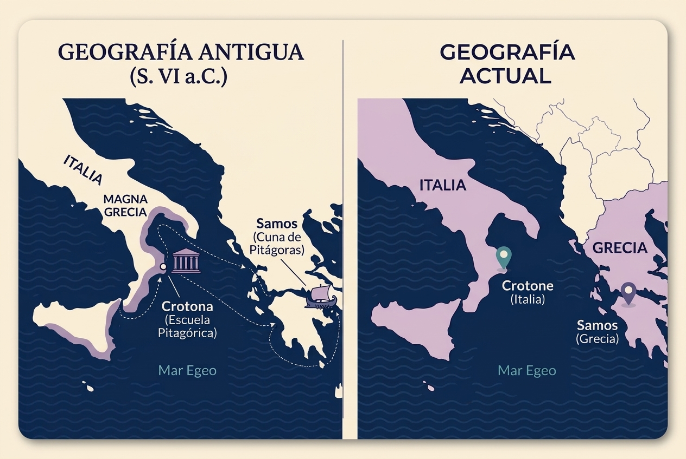

MÓDULO I: FUNDAMENTOS E HISTORIA
El Filósofo que no Buscaba Adivinar, sino Comprender: De la Acústica Antigua a la Ciencia Moderna
La numerología seria no exige fe a ciegas ni fatalismo mágico. Se fundamenta en la observación rigurosa de las leyes de proporción, la física acústica del sonido y la contrastación empírica en biografías humanas. Los números no determinan tu futuro; describen tu mapa de potencialidades y los ciclos disponibles para que tu libre albedrío tome decisiones conscientes.
1. El Descubrimiento de Pitágoras: La Música es Matemática en Acción
Mucho antes de que existieran las computadoras, los algoritmos o la física cuántica, en la antigua Grecia un hombre comprendió algo revolucionario: todo lo que nos rodea puede traducirse a números. Ese hombre fue Pitágoras de Samos (c. 570 – 495 a.C.).
Lejos de la imagen folclórica del místico aislado, Pitágoras fundó en Crotona la célebre Escuela Pitagórica, donde la matemática no se enseñaba como un ejercicio mecánico de contabilidad, sino como la estructura atómica y vibracional del cosmos.

Nota Histórica sobre Samos
Samos era una próspera polis griega en el mar Egeo oriental, frente a las costas de Asia Menor (actual Turquía); hoy pertenece oficialmente a Grecia. Huyendo de la tiranía de Polícrates, Pitágoras emigró hacia el occidente y fundó su comunidad en Crotona (c. 530 a.C.), una influyente ciudad marítima de la Magna Grecia —territorio colonizado por los griegos en el sur de la península itálica—. En la actualidad, Crotone existe y es una ciudad y provincia italiana situada en la región de Calabria (frente al mar Jónico).
El Experimento del Monocordio: La Física del Sonido
Además de formular el célebre Teorema de Pitágoras sobre los lados del triángulo rectángulo —principio geométrico fundamental que sostiene hasta hoy las bases de la matemática, la ingeniería estructural y la arquitectura moderna—, Pitágoras descubrió que la belleza musical responde a proporciones matemáticas fijas:
Por primera vez en la historia, la ciencia demostró que una experiencia tan sutil y profundamente emotiva como la música estaba gobernada por una ley aritmética verificable. Siguiendo esa misma analogía, podemos observar la vida humana como una partitura en desarrollo, donde cada número actúa como una pauta de afinación para comprender nuestro propio diseño.
2. De la Escuela Antigua a la Escuela Moderna: El Puente de 2500 Años
La numerología aplicada que estudiamos hoy no es un calco directo de lo que se practicaba en Grecia en el siglo VI a.C. Ha experimentado una evolución decisiva en dos grandes etapas:
3. Las Mentes Pioneras: Sarah Joanna Dennis y la Dra. Juno Jordan
Para entender el método moderno, debemos situarnos en Atlantic City, New Jersey, entre 1900 y 1920. En una época deslumbrada por la telegrafía sin hilos y las ondas hertzianas, Sarah Joanna Dennis (1847–1929) —conocida públicamente como Mrs. L. Dow Balliett— unió tres pilares: la escala musical pitagórica, la física de la resonancia acústica y el alfabeto occidental.
¿Por qué firmaba con el nombre de su esposo?
En la época victoriana, las convenciones sociales dictaban que las mujeres casadas fueran acreditadas mediante la identidad formal de sus cónyuges. Firmar como Mrs. L. Dow Balliett le concedió legitimidad ante un mercado editorial dominado por hombres. Hoy rescatamos su nombre propio, Sarah Joanna Dennis, como la verdadera arquitecta del método.
Dennis diseñó la matriz decimal de conversión del alfabeto (A = 1, B = 2... I = 9), descubrió que las vocales expresan el deseo íntimo (Impulso del Alma) y las consonantes la proyección exterior (Personalidad), e identificó los Números Maestros (11, 22, 33). Entre 1904 y 1917 publicó obras fundacionales como La filosofía de los números: sus tonos y colores (The Philosophy of Numbers: Their Tone and Colors), disponible en dominio público para su consulta en Internet Archive.
El Origen de la Palabra «Numerología»
Pitágoras nunca escuchó la palabra «Numerología». Durante milenios el saber se conoció como aritmancia o ciencia de las vibraciones numéricas. El término en inglés Numerology fue acuñado en 1912 por una colega de Balliett, la Dra. Julia Seton Sears, para brindarle un marco científico y renovado a la disciplina.
La Alquimia del Alfabeto: ¿Por qué las letras tienen número?
Uno de los mayores interrogantes del estudiante novato es comprender por qué un nombre propio —compuesto por letras del abecedario— puede traducirse a cifras matemáticas sin caer en la arbitrariedad o la superstición. Para la Escuela Pitagórica Moderna, la respuesta se fundamenta en la física acústica y la fonación humana:
A=1, B=2... I=9, reiniciando en la J=1, K=2... R=9 y S=1... Z=8. Cada letra comparte la cualidad elemental del número arquetípico sobre cuya columna descansa.
A partir de esta correspondencia, Dennis descubrió una clave anatómica decisiva en el aparato fonador humano: el sonido no se produce del mismo modo al emitir una vocal que al articular una consonante:
Matriz Acústica de Vocales y Consonantes
Descargar Ficha Alfabética (PDF)| Componente Fonético | Mecanismo de Articulación Física | Significado Psicológico en la Carta |
|---|---|---|
| Las Vocales (A, E, I, O, U / Y) |
El Aire Libre (Sin Choque): Se emiten a través de las cuerdas vocales sin ninguna obstrucción de la lengua, los labios o los dientes. El flujo de aire viaja directo desde el interior. | El Impulso del Alma: Expresan el mundo interior intangible, las motivaciones privadas, los deseos que la persona no suele revelar en público y lo que necesita íntimamente para experimentar plenitud. |
| Las Consonantes (B, C, D, F, G, H...) |
La Resistencia Física (Choque): No pueden sonar solas; necesitan chocar físicamente contra los labios, el paladar, los dientes o la lengua para adquirir forma audible en la materia. | La Personalidad Exterior: Representan la armadura visible, la fachada social de entrada, la primera impresión que los demás reciben y los mecanismos de defensa conductual ante el entorno. |
¿Por qué las letras K y V no se consideran Números Maestros (11 y 22)?
Al consultar otros tratados de numerología, notarás que algunos autores proponen no reducir las letras K y V, asignándoles directamente los valores 11 y 22 por ocupar las posiciones 11.ª y 22.ª del abecedario.
Siguiendo rigurosamente las investigaciones empíricas del Instituto de la Dra. Juno Jordan, en los materiales de Vidia computamos la K como 2 (1+1) y la V como 4 (2+2) por dos razones técnicas fundamentales:
1. Preservación de la escala de 9 columnas: El sistema pitagórico se estructura sobre 9 frecuencias acústicas base (del 1 al 9). Alterar arbitrariamente dos columnas individuales distorsiona la armonía de la matriz decimal.
2. Los Números Maestros son acordes de síntesis, no notas aisladas: En la numerología pitagórica ortodoxa, un 11 o un 22 en el nombre emerge de la suma integral de las vocales o de todas las letras juntas (como en MARÍA, cuyas vocales 1+9+1 generan el acorde armónico 11), y no de una letra aislada. Asignar 22 a la «V» generaría una inflación artificial de maestrías en cualquier nombre común (como Valeria, Valentina o Víctor), desvirtuando el alto voltaje real de la carta.
La Contrastación Empírica: La Dra. Juno Jordan
A los 14 años, Juno Jordan (1884–1984) comenzó a formarse directamente con Sarah Balliett. Ya recibida de cirujana dentista y con formación en el método científico, fundó en California el célebre Instituto de Investigación Numérica de California (California Institute of Numerical Research).
Durante más de 25 años de investigaciones clínicas continuas, Jordan y su equipo contrastaron miles de biografías, fechas y nombres reales. Su investigación permitió descartar fórmulas supersticiosas y confirmar empíricamente los cálculos de mayor consistencia. Su obra cumbre de 1965, El romance en tu nombre (The Romance in Your Name) —publicada por DeVorss & Company y disponible para estudio en bibliotecas abiertas como Internet Archive—, consolidó de forma definitiva la arquitectura de la Carta Numerológica moderna.
4. Anatomía de la Carta Numerológica Integral
La Carta o Mapa Numerológico: ¿Qué es exactamente?
En la práctica, la herramienta central de estudio de esta disciplina se denomina Carta Numerológica (o Mapa Natal Numerológico).
Así como un geógrafo utiliza un mapa topográfico para comprender el relieve de un terreno, o un navegante usa una carta náutica para trazar su ruta, en numerología pitagórica llamamos «carta» al documento de síntesis donde se vuelcan, organizan y cruzan todas las coordenadas matemáticas de un individuo (obtenidas a partir de su fecha de nacimiento y su nombre legal completo).
La Carta Numerológica no es un horóscopo comercial ni un diagnóstico rígido sobre el destino. Es una radiografía vibracional y un plano de diseño humano que revela las fortalezas, desafíos inconscientes, ciclos biográficos y potenciales latentes de una persona.
En Vidia enseñamos esta disciplina mediante un método pedagógico estructurado que permite:
- Comprender la lógica matemática y acústica desde sus cimientos reales, sin recurrir a la memorización mecánica.
- Dominar el protocolo exacto de cálculo para evitar degradaciones erróneas en los resultados.
- Avanzar por una ruta de aprendizaje gradual y clara, donde primero calculas el mapa completo y luego incorporas el significado psicológico de cada frecuencia de forma práctica y aplicable a la vida cotidiana.
Las Tres Dimensiones de la Carta
Descargar Ficha Técnica (PDF)| Dimensión | Fuente de Origen | Componentes Clave | Función en la Consulta |
|---|---|---|---|
| 1. Eje Temporal (La Ruta de Vida) |
Fecha exacta de nacimiento (inmutable). | Día Natal, Mes Natal, Año Natal y Camino de Vida. | Describe el terreno de juego, las herramientas temperamentales innatas y la dirección evolutiva de menor fricción. |
| 2. Matriz Onomástica (El Vehículo Humano) |
Nombre completo legal registrado al nacer. | Impulso del Alma (Vocales), Personalidad Exterior (Consonantes) y Expresión Total. | Describe la psicología profunda: los anhelos inconscientes, la fachada relacional y el motor operativo en la materia. |
| 3. Dinámica Temporal (El Clima Estacional) |
Cruce de la Carta Natal con el Año Calendario. | Pináculos de Vida, Desafíos Biográficos y Año Personal. | Describe el clima estacional: cuándo sembrar, cuándo consolidar estructuras y cuándo soltar etapas que cumplieron su ciclo. |
Los Moduladores Cualitativos: Números Maestros y Deudas Kármicas
Las dimensiones anteriores no siempre se expresan a través de los nueve dígitos base (del 1 al 9). A lo largo del mapa natal pueden emerger dos tipos de frecuencias compuestas que modifican el voltaje y la exigencia psicológica del consultante:
Números Maestros (11, 22 y 33) — El Alto Voltaje Evolutivo
Son frecuencias compuestas por dígitos dobles idénticos que no se reducen en las sumas intermedias del cálculo. Indican un potencial de percepción intuitiva agudizada, capacidad de construcción a gran escala y liderazgo inspirador, pero exigen una maduración consciente superior. Quien porta un Número Maestro suele atravesar etapas de fuerte autoexigencia interna y replanteos vocacionales profundos hasta aprender a canalizar esa fuerza hacia un propósito colectivo:
| Número | Frecuencia Base | Potencial Elevado | Exigencia Psicológica / Desafío |
|---|---|---|---|
| 11 | Base 2 (Sensibilidad) | Canal intuitivo, inspiración espiritual y liderazgo visionario. | Superar la autoexigencia extrema, el nerviosismo interior y la duda sobre la propia valía. |
| 22 | Base 4 (Estructura) | Constructor maestro; capacidad de materializar proyectos de escala global o social. | No abrumarse ante la magnitud de la obra ni caer en el autoritarismo o el estrés material. |
| 33 | Base 6 (Amor/Armonía) | Maestro compasivo; protección comunitaria y guía desinteresada. | No inmolarse por los demás; aprender a sostener límites sanos sin desgaste reactivo. |
Deudas Kármicas (13/4, 14/5, 16/7 y 19/1) — Las Asignaturas Pendientes
Son números compuestos que señalan patrones de conducta repetitivos donde la persona suele experimentar fricción o bloqueo recurrente. Lejos de considerarse un castigo o un destino fatalista, representan un entrenamiento correctivo de la conducta: la persona opera con los dones del dígito simple resultante, pero el número compuesto precedente revela la prueba formativa específica que vino a ordenar:
| Deuda | Base Operativa | Patrón de Bloqueo Recurrente | Aprendizaje Correctivo (La Clave) |
|---|---|---|---|
| 13/4 | Opera como 4 | Frustración ante el esfuerzo sostenido, pereza, queja o tendencia a buscar atajos. | Constancia y método: construir paso a paso con paciencia y disciplina sin resentimiento. |
| 14/5 | Opera como 5 | Dispersión, impulsividad, escape de responsabilidades y excesos en los sentidos. | Libertad con templanza: vivir la aventura manteniendo el orden interno y el compromiso. |
| 16/7 | Opera como 7 | Orgullo intelectual, arrogancia, autosuficiencia rígida y desconexión afectiva. | Apertura y humildad: permitir la vulnerabilidad, derribar la máscara y conectar con los demás. |
| 19/1 | Opera como 1 | Autoritarismo, manipulación o la queja de autosuficiencia: «yo tengo que hacer todo solo». | Liderazgo empático: conducir proyectos delegando con generosidad y sin aislarse. |
Equivalencias de Términos: ¿Cómo dialogan las distintas escuelas?
Al consultar diversa literatura numerológica (autores contemporáneos, escuelas humanísticas o vertientes anglosajonas tradicionales), notarás que no existe un glosario único: distintos autores utilizan diferentes nombres para referirse exactamente a las mismas coordenadas matemáticas. Para evitar confusiones durante tu formación, a continuación se detallan las equivalencias terminológicas de los pilares fundamentales:
| Término en este Manual (Línea Jordan / Vidia) |
Cálculo / Origen | Sinónimos en Otros Libros y Escuelas | Función Psicológica |
|---|---|---|---|
| Día Natal | Día calendario de nacimiento (1 a 31) | Talento Innato, Lo que trajo consigo, Número del Natalicio, Herramienta de Nacimiento. | Recursos de fábrica y respuesta instintiva automática. |
| Camino de Vida | Suma total de la fecha (Día + Mes + Año) | Sendero de Vida, Lección de Vida, Destino Natal, Número de Vida (Life Path). | Ruta de evolución mayor y terreno de aprendizaje central. |
| Impulso del Alma | Suma del valor acústico de las vocales | Número del Alma, Deseo del Corazón, Anhelo Íntimo, Motivación Interna (Soul Urge). | Motivaciones privadas, anhelos profundos y búsqueda de plenitud. |
| Personalidad Exterior | Suma del valor de las consonantes | Número de Personalidad, Máscara Social, Imagen Exterior, Fachada Relacional. | Primera impresión, mecanismos de defensa y proyección social. |
| Número de Expresión | Suma del nombre completo (Vocales + Consonantes) | Temperamento, Número de Destino, Capacidad Operativa, Misión Expresiva. | Herramientas profesionales, vocación y canalización práctica en el mundo. |
| Cálculos Compuestos de Síntesis (Profundización en Módulo II) |
Cruces de Camino de Vida, Nombre e Iniciales | Número de Madurez, Lección Vital (Camino + Expresión), Número de Misión, Fuerza Central. | Integraciones de segunda mitad de la vida y detección de Deudas Kármicas compuestas. |
5. El Camino de Vida
Libre Albedrío: Soberanía frente al Determinismo
Habiendo comprendido la arquitectura general de la carta, corresponde profundizar en su coordenada principal: el Camino de Vida. Al ser el resultado de integrar la fecha de nacimiento completa, representa el aprendizaje evolutivo mayor de la persona.
¿Creer o calcular? El lenguaje de los patrones
Para entender la numerología seria no hace falta «fe». Solo hace falta observación. La naturaleza no crea de forma caótica. Las espirales de un girasol, la forma de una galaxia, la disposición de los pétalos de una rosa, la estructura intrincada de nuestras propias cadenas de ADN y la geometría infinita de los fractales siguen secuencias matemáticas concretas: como la famosa sucesión de Fibonacci, la proporción áurea y los patrones autosimilares que se repiten a diferentes escalas.
La física moderna nos enseña que toda la materia en el fondo es energía vibrando a diferentes frecuencias. Los números son, en esencia, símbolos que representan esas frecuencias específicas.
Cuando la numerología pitagórica analiza tu fecha de nacimiento, no está haciendo magia ni predicción del futuro. Lo que hace es identificar la impronta matemática del día en que llegaste al mundo.
Pensalo por un segundo: el día en que naciste, el planeta estaba en una posición exacta, la Tierra completaba un ciclo específico y el tiempo registraba una coordenada irrepetible. Esa coordenada matemática es tu código fuente.
Así como en la informática el código fuente contiene las instrucciones invisibles que determinan cómo va a procesar la información un sistema, tu matriz de nacimiento es el software base con el que viniste instalado de fábrica. Tu personalidad y tus decisiones diarias son la interfaz gráfica que ve el exterior; y, al igual que la ficha técnica de un avatar en un videojuego, tus números definen tus atributos base, herramientas nativas y rangos de acción con los que ejecutas la partida, dejando el rumbo de las decisiones en manos de tu libre albedrío.
Sin embargo, para interpretar este número con rigor profesional es indispensable derribar el mito del determinismo: la numerología no adivina el futuro ni sentencia la suerte. Su verdadero valor radica en ofrecer un marco de referencia claro para distinguir aquello con lo que venimos al mundo de las decisiones que tomamos a partir de ello:
«Los números no te atan a un destino prefijado; encienden las luces del tablero de comandos para que seas tú quien pilotee su vida con lucidez y soberanía».
6. Las Dinámicas Temporales: Pináculos y Años Personales
El Factor Tiempo: Navegación Consciente frente al Fatalismo
Una de las confusiones más frecuentes en quien se acerca por primera vez a la numerología es creer que las dinámicas temporales (los Pináculos y los Años Personales) son sentencias rígidas que predicen lo que va a sucederte. La realidad es exactamente la contraria: no anuncian sucesos prefijados, sino que describen la marea y el clima energético en el que te tocará operar.
El tiempo numerológico funciona exactamente como las condiciones climáticas:
La Metáfora del Clima
Si el meteorólogo anuncia una tormenta con temperaturas bajo cero, esa advertencia no restringe tu libertad: te brinda información estratégica. Puedes salir desabrigado y sufrir las consecuencias, o puedes ponerte abrigo adecuado y avanzar de manera segura.
Un Año Personal 7 no determina que "te irá mal en los negocios", sino que señala que la marea energética favorece el estudio, la pausa y el discernimiento interno por encima de la expansión material desenfrenada. Conocer el clima te permite navegar con el viento a favor en lugar de remar a contracorriente.
Conocer el clima del tiempo no anula tu libre albedrío: te permite navegar con el viento a favor en lugar de remar a contracorriente.
7. La Integración de la Carta: La Dinámica del Viaje
El Mapa, el Conductor y la Ruta: Cómo Dialogan las Tres Dimensiones
El mayor error en la práctica numerológica es interpretar números aislados. Una persona no es únicamente su Camino de Vida, ni se reduce a las letras de su nombre, ni está condicionada exclusivamente por su Año Personal. La maestría del consultor consiste en observar cómo conversan estas tres dimensiones entre sí:
La Dinámica de Integración: El Mapa, el Conductor y la Ruta
Una lectura profesional jamás interpreta estos tres niveles de manera aislada:
- • Las Coordenadas Natales son el Mapa y el Terreno: Señalan la geografía básica con la que llegamos al mundo.
- • La Matriz Onomástica es el Vehículo y el Conductor: Describe las herramientas operativas con las que nos movemos.
- • Las Dinámicas Temporales son el Clima de la Ruta: Marca la estación en la que conduces, determinando cuándo avanzar o cuándo resguardarse.
Tener un vehículo de enorme potencia en un terreno escarpado y bajo una tormenta invernal exige una estrategia muy distinta a conducirlo en autopista despejada. Comprender este diálogo integral es lo que transforma a la numerología de una simple curiosidad aritmética en una disciplina profunda de diagnóstico y soberanía biográfica.
Los 5 Principios Fundamentales del Módulo I
1. LA RAÍZ CIENTÍFICA: ACÚSTICA, NO ADIVINACIÓN
✓ El Monocordio como laboratorio: Pitágoras demostró que la consonancia y la belleza auditiva dependen de fracciones matemáticas exactas (proporción 2:1 para la octava superior; 3:2 para la quinta justa). El número no solo cuantifica mercancías; define la cualidad armónica y vibratoria de la realidad.
✓ Correspondencia bioacústica: La materia y el sonido responden a frecuencias medibles en hercios. Siguiendo las investigaciones del Instituto de la Dra. Juno Jordan, en esta disciplina no se adivina: se analiza la afinación de las cuerdas biográficas del consultante.
2. LA MATRIZ ONOMÁSTICA: VOCALES VS. CONSONANTES
✓ Las Vocales (El Impulso del Alma): Emitidas sin choque mecánico del aparato fonador (flujo de aire libre y continuo). Describen los anhelos íntimos, las motivaciones inconscientes y las condiciones privadas requeridas para sentir bienestar y plenitud.
✓ Las Consonantes (La Personalidad Exterior): Emitidas mediante la resistencia física de labios, lengua, paladar y dientes. Configuran la máscara social, la primera impresión proyectada hacia el entorno y la coraza defensiva en las relaciones.
3. ANATOMÍA DE LA CARTA: MAPA, CONDUCTOR Y RUTA
✓ Dimensión 1 • Eje Temporal (El Terreno): Derivado de la fecha natal exacta (Día, Mes, Año y Camino de Vida). Describe la geografía de partida inmutable y las herramientas de fábrica.
✓ Dimensión 2 • Matriz Onomástica (El Vehículo): Calculado a partir del nombre legal completo (Alma, Personalidad y Expresión). Muestra la psicología profunda y las capacidades operativas para moverse en la materia.
✓ Dimensión 3 • Dinámica Temporal (El Clima): Cruce de la carta natal con el año calendario (Pináculos, Desafíos y Año Personal). Señala la estación meteorológica para navegar a favor del viento.
4. MODULADORES: ALTO VOLTAJE Y DEUDAS EVOLUTIVAS
✓ Números Maestros (11, 22, 33): Frecuencias dobles idénticas que nunca se reducen en sumas intermedias. Indican un potencial intuitivo y de construcción a gran escala, sujeto a fuerte autoexigencia interna que demanda servicio colectivo.
✓ Deudas Kármicas (13/4, 14/5, 16/7, 19/1): Patrones de fricción conductual repetitivos. Lejos de constituir castigos fatalistas, representan entrenamientos correctivos (13: constancia y orden; 14: templanza ante los excesos; 16: humildad afectiva; 19: liderazgo sin autoritarismo).
5. EL CÓDIGO ÉTICO: SOBERANÍA FRENTE AL DETERMINISMO
✓ Código fuente, no condena: La fecha y el nombre definen el software base y la ficha técnica de un avatar, pero el libre albedrío es el jugador soberano que ejecuta cada partida.
✓ El mapa vs. el territorio: El analista serio enciende las luces del tablero de comandos para que la persona pilotee su biografía con lucidez y responsabilidad personal.
Próximo Paso: Módulo II — La Matriz Alfabética y el Cálculo Integral
Ya comprendes los fundamentos acústicos, la física de proporciones, la arquitectura de la carta en 3 dimensiones y sus moduladores cualitativos (Números Maestros y Deudas Kármicas). Ahora es momento de tomar lápiz, papel y calcular tu propia carta natal completa paso a paso.
En el siguiente módulo aprenderás el algoritmo de reducción en 2 fases sin perder los Números Maestros ni las Deudas Kármicas, el discernimiento fonético en español y el cálculo de tus 4 Pináculos, 4 Desafíos y tu Año Personal con el Efecto Marea.
🔒 El acceso libre y abierto finaliza en este primer módulo.
Adquiere la formación completa para acceder de inmediato al manual exhaustivo (Módulos II al VI), las calculadoras clínicas avanzadas y las plantillas de consulta profesional de Vidia.